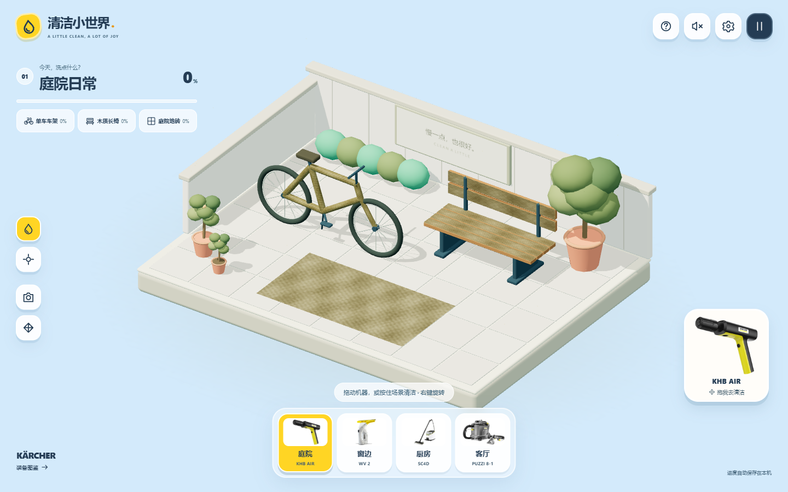

清洁小世界 · Clean a Little：拖动机器，洗亮四个小场景
拖动一台机器，让被污渍盖住的颜色慢慢回来。清洁小世界是一款浏览器 3D 清洁游戏，用四款卡赫设备连接庭院、窗边、厨房与客厅。没有倒计时、体力或购买限制，可以按自己的节奏完成一小片清洁，再去看看下一个场景。

四个场景，四种手感
庭院用 KHB AIR 冲洗单车、长椅和地砖；窗边用 WV 2 擦亮三块玻璃，露出后面的花园；厨房用 SC4D 清洁灶台、瓷砖与地面；客厅则用 PUZZI 8-1 喷抽沙发、靠垫和地毯。水流、擦窗、蒸汽与布艺喷抽分别配有粒子和合成音效。
每关都有三个任务和独立进度。单项达到 92% 后，程序会清除少量余渍；三项完成后出现结算，可继续下一站。底部选择器也能直接切换场景，重玩只重置当前这一关。
污渍跟着操作消失
项目使用 TypeScript、Three.js 和 Vite。清洁发生在操作命中的三维表面，反复擦过已经干净的位置不会重复增加进度。场景由程序化几何构建，设备使用产品照片；清洁参数属于游戏设定。
可以拖动机器，也可直接按住场景清洁，支持鼠标、键盘和触屏。松开操作、切换场景或窗口失焦都会停止清洁。四关痕迹与用时自动保存在浏览器，昼夜、音量和环境动画偏好也能保留；本地与线上存档分别计算。
继续了解
游戏是无需账号和后端的静态前端应用，需使用支持 WebGL 2 的浏览器。完整操作、运行方式及第三方素材说明见 项目 README。